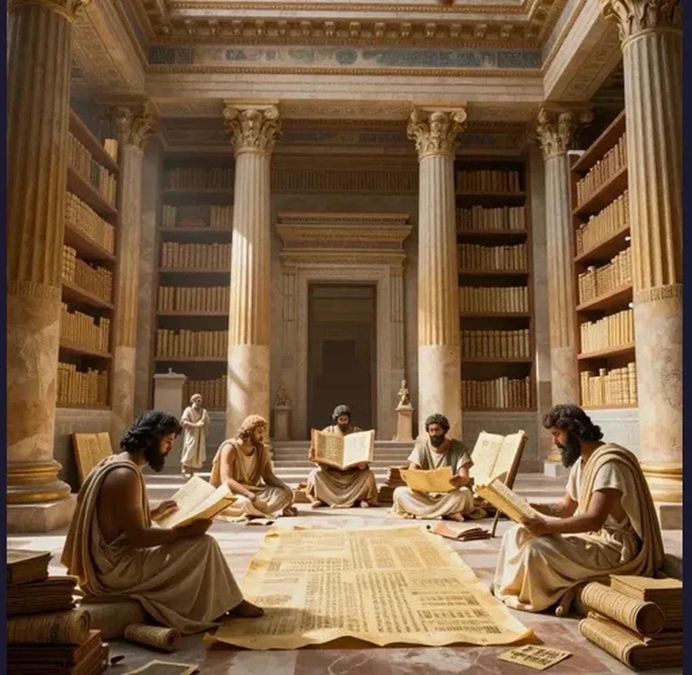

The Library of Alexandria: The Greatest Collection of Knowledge the Ancient World Ever Knew

A ship sails into the harbor of Alexandria, on the coast of Egypt. It is the third century BCE. Before the sailors can unload, the king’s officers come on board. They are not looking for gold or weapons. They are looking for books.
Any books they found were taken away. Trained writers called scribes copied them by hand, and the books joined the royal collection. This was the Library of Alexandria. A family of Greek pharaohs built it. Nothing like it had existed before, and nothing has truly replaced it.
It was more than a library. It was a bold attempt to collect every book, every scroll, and every piece of written knowledge in the known world. The king’s agents traveled across the Mediterranean with bags of gold. Their orders were to buy or copy every text they could find.
The library grew until it held an estimated 400,000 to 700,000 scrolls. It was the largest store of knowledge in the ancient world. It was joined to the Mouseion, a place of research named for the Muses, the Greek goddesses of art and learning. The best minds of the Greek world lived and worked there, and the government paid for it.
Euclid wrote his Elements there. It became the most influential mathematics textbook ever written. Eratosthenes worked out the distance around the Earth with a stick, a shadow, and geometry. His answer was remarkably good.
Aristarchus of Samothrace said that the Earth and the planets move around the Sun. This is called a heliocentric model. He said it nearly 1,800 years before Copernicus. And Callimachus listed the whole library in 120 scrolls of indexes. It was the first full list of books in history.
Then, over several centuries, it was all destroyed. Many people call this the greatest disaster in the history of human knowledge. We still feel the loss two thousand years later.
The story of the library is not only a sad one. It is also a mirror. In it we can see how easily a civilization can break. We like to believe that knowledge lasts forever. The Library of Alexandria proves that this is wrong.
The Greeks who built it understood something that we have since forgotten. Knowledge needs institutions, such as libraries and schools, to keep it safe. Institutions need money and leaders who care. When the institutions fall, the knowledge falls with them.
Alexandria lost more than a pile of papyrus scrolls. It lost the thinking of the whole ancient world. That meant centuries of science, philosophy, literature, medicine, and history. It took about a thousand and five hundred years to win this back. Some of it never came back at all.
The idea of the library was born after Alexander the Great died in 323 BCE. His generals cut his empire into pieces. One of his most trusted commanders was Ptolemy I Soter. He seized Egypt and founded a line of kings, the Ptolemaic dynasty.
Ptolemy chose Alexandria as his capital. Alexander had founded the city on the Mediterranean coast. Ptolemy set out to make it the center of learning for the whole world.
The idea of a library of everything may have come from Demetrius of Phalerum. He was a statesman and philosopher from Athens. He had been forced to leave home, and he found safety at Ptolemy’s court.
The library itself was most likely built under Ptolemy’s son, Ptolemy II Philadelphus. He ruled from 285 to 246 BCE. He also made the Mouseion a research center paid for by the state.
The name Mouseion means “Temple of the Muses.” It was modeled on the Lyceum, the school of Aristotle in Athens, but it was far grander. Scholars received a home, food, and a salary. They were expected to do their research and not to worry about earning a living.
The Mouseion had lecture halls, laboratories, dining halls, gardens, and the library itself. Scholars were invited from all over the Greek-speaking world. This made the Mouseion the first true research university in history.
The place was alive with ideas. Mathematicians, astronomers, geographers, doctors, poets, and philosophers worked side by side. They shared ideas and built on one another’s discoveries.
Euclid wrote his Elements there around 300 BCE. It set out the basics of geometry that students still learn today. Eratosthenes lived from about 276 to 194 BCE. He measured the angle of the Sun’s shadow at places far apart, to the north and south. From this he worked out that the Earth is about 39,375 kilometers around. The modern figure is 40,075 kilometers. He was amazingly close.
Callimachus lived from about 310 to 240 BCE. He wrote the Pinakes, a list of the whole collection in 120 scrolls. It was arranged by author and subject. It was the first full library catalogue in history.
Hero of Alexandria lived from about 10 to 70 CE. He invented the aeolipile, an early steam engine. And Manetho wrote a history of the Egyptian pharaohs. Modern experts still use it as the base for dating Egypt’s past.
The Ptolemies were bold collectors. They sent agents to every port in the Mediterranean, from Athens to Rhodes to the coast of the Levant. The agents had orders to buy every scroll they could find.
Ships that docked at Alexandria were searched. Any books on board were taken and copied by the library’s scribes. Then the copies were given back to the owners. That is one account. In other accounts, the library kept the originals and gave back the copies.
One story is about three great Athenian writers of tragedies: Aeschylus, Sophocles, and Euripides. Athens kept official copies of their plays. It is said that the Ptolemies borrowed these copies and left a huge deposit of fifteen talents of gold. Then they kept the precious originals and gave up the gold.
Ancient writers put it at 400,000 to 700,000 scrolls, though modern scholars argue about these numbers. One scroll usually held one work, or part of a longer work. So the number of separate texts was probably in the tens of thousands.
The collection had works in Greek, Egyptian, Persian, Indian, Hebrew, and other languages. It was a store of many cultures. The Pinakes of Callimachus listed works by type and by author. It gave a short life of each author and a judgment of the work.
The library covered science and mathematics. It had works on geometry, astronomy, physics, engineering, medicine, and the natural world. It held the full works of the Greek playwrights, poets, and prose writers. Among them were many plays by Aeschylus, Sophocles, and Euripides that no longer exist.
It held full accounts of peoples across the known world. There were histories of Egypt, Persia, Babylon, and India that are now completely lost. It held all the works of Aristotle, an estimated 150 scrolls. Only about 30 survive. It also held Plato and dozens of other schools of philosophy.
And it kept medical texts. They dealt with anatomy, which is the study of how a body is built. They dealt with surgery, with medicines, and with how to recognize an illness. These works were centuries ahead of their time.
In time the main library grew too big for the Mouseion building. Ptolemy III Euergetes ruled from 246 to 221 BCE. In his reign, a “Daughter Library” was set up in the Serapeum. This was the temple of the god Serapis, in the southwestern part of Alexandria. Serapis was a god who mixed Greek and Egyptian beliefs.
The Serapeum took the extra scrolls. It was also open to the public, while only scholars could use the main library. The Daughter Library was large in its own right, with an estimated 42,800 scrolls. The Serapeum lasted centuries longer than the main library. It was a center of learning until the late fourth century CE.
Many people believe that one great fire destroyed the Library of Alexandria. That is not what happened. Many disasters struck it over centuries. Each one took away part of the collection, until nothing was left.
The first disaster people name is Julius Caesar’s fire in 48 BCE. During the Alexandrian War, Caesar set fire to ships in the harbor. The fire spread to warehouses on the waterfront. An estimated 40,000 scrolls were stored there.
In 272 CE, the Roman emperor Aurelian attacked the Brucheion quarter. This wrecked much of the royal part of the city, including the Mouseion.
In 391 CE, Emperor Theodosius I gave an order to destroy pagan temples across the empire. Pagan temples were the temples of the old gods. A Christian mob, led by Bishop Theophilus of Alexandria, then tore down the Serapeum.
In 415 CE, a Christian mob killed Hypatia. She was a brilliant mathematician and philosopher, and the last great scholar in the tradition of the Mouseion. The mob pulled her from her chariot and killed her.
Last came the Arab conquest of Alexandria in 642 CE. It is said that the caliph, the ruler of the Arab empire, ordered the last books destroyed, if any were left.
Experts still argue about which of these events was the fatal one. Most modern scholars think the library declined slowly and did not die in a single disaster.
Hypatia of Alexandria was the last great scholar of this tradition. She lived from about 350 to 415 CE. She was a mathematician, an astronomer, and a philosopher of the school called Neoplatonism. She taught at the school that followed the Mouseion. She became the most famous woman thinker of the ancient world.
Hypatia wrote studies of the works of Diophantus, who is called the father of algebra. She also wrote on Apollonius of Perga, who studied the curves called conic sections. She built astrolabes, which measure the positions of stars, and hydrometers, which measure liquids. Students came to her from across the Mediterranean.
She was also a trusted adviser to Orestes, the Roman prefect, or governor, of Alexandria. So she was a figure in politics as well as in learning.
In March 415 CE, Alexandria was torn by violence between Christians, pagans, and Jews. A mob of angry Christians pulled Hypatia from her chariot. They dragged her through the streets to the Caesareum church and killed her there. It is said that they then burned her body.
People have called her the “last librarian of Alexandria,” though she probably never held that title. Her death came to stand for the end of the Alexandrian tradition. That tradition had produced some of the greatest work of the human mind.
Nobody can measure what was lost with the Library of Alexandria. But we can catch a glimpse of it in the books that survive. They mention the titles and authors of hundreds of works that no longer exist. Those works could be read in Alexandria. Now they are gone for good.
Aristotle wrote an estimated 150 scrolls, and only about 30 survive. Most Greek drama is lost, including most of the plays of Aeschylus, Sophocles, and Euripides. The book in which Aristarchus put the Sun at the center is gone. The geography of Eratosthenes survives only in pieces.
Berossus wrote a history of Babylon, and Manetho wrote a history of Egypt. Their works, and those of dozens of other historians, exist only as quotations in later books. Whole fields of ancient science, medicine, and engineering were simply wiped out.
Some scholars have argued that the loss set Western civilization back by a thousand years or more. If the library had survived, they say, modern science might have begun in ancient times and not in the sixteenth century. This is a guess, of course.
The Library of Alexandria was not destroyed by one cruel act. It was destroyed by centuries of neglect, war, religious hatred, and unsteady government. Every institution that should have protected it slowly failed.
The Ptolemies built it. Roman officials replaced them, and they did not share the dream. The Roman Empire then broke into rival states that could not look after it. The Christian church took the place of the old religion and did not trust what was in the scrolls. The Arab conquerors came last. They found, at most, the leftovers of the leftovers.
So the library did not die in one great blaze. It faded over centuries.
And yet the Library of Alexandria is still one of the strongest symbols in human history. It shows what we can do when we give ourselves to the search for knowledge. It shows what we lose when we stop caring.
In 2002, a striking modern library opened in Alexandria. It is called the Bibliotheca Alexandrina. It honors what was lost. It also declares that the spirit of curiosity that built the old library is not dead.
But the scrolls that filled the first library are gone for good. Gone are the lost plays of Sophocles and the writings of forgotten geniuses.
The Library of Alexandria reminds us that knowledge is the most precious thing people make, and the easiest to break. It can be built over centuries and destroyed in a single lifetime. And one question stays open. What was written on all those lost scrolls?
References & Further Reading
Wikipedia: Mouseion — The research institute attached to the Library of Alexandria
Wikipedia: Serapeum of Alexandria — The temple that housed the Daughter Library
📚 Recommended Reading: The Library of Alexandria by Islam Issa (on Amazon) — As an Amazon Associate, we earn from qualifying purchases.
Editorial note: reconstructions are continuously revised as imaging and inscription studies improve. See our Editorial Policy.